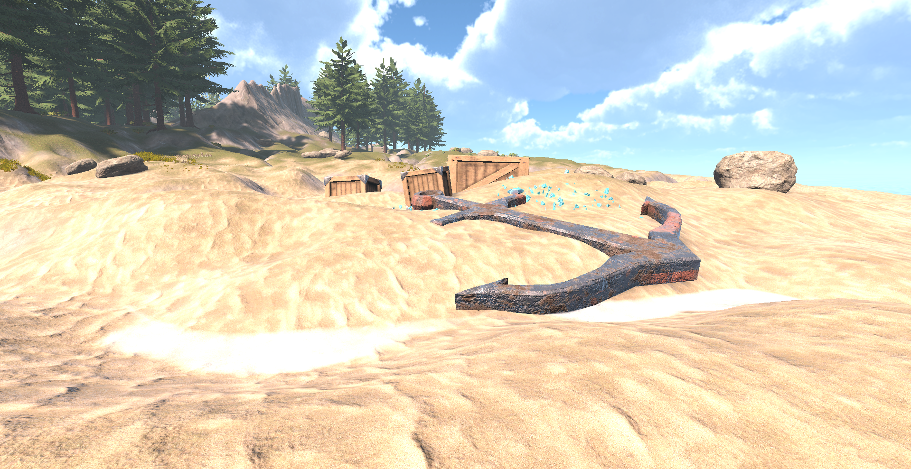
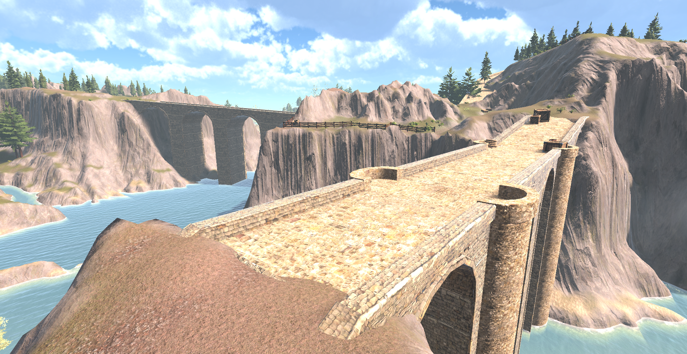

Image description 1
In this project, I have used Unity, Gaia, and Blender to create a virtual world
around the theme of mountains and berry-picking.
One of my goals for the project was to emulate a small part of the water system, where
large rivers are formed by smaller streams in the mountains. I'm particularily proud
of the fog, it almost feels refreshing to walk through.
Although Gaia provided many different types of foliage for the world, I wanted to
create some of my own. I added patches of strawberries as
I enjoy picking them in the wild, and
strawberries seemed like a fun plant to model. Along with the foliage , I
added bridges, fences, crates, baskets, and various other pieces of interest to
create a world that's interesting and cohesive.
Image description 1